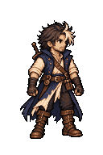

冒険者A — 歩行アニメの作画レビュー
承認された立ち姿の見た目を基準に、Pixeloramaの4キーポーズ／8コマを比較する未承認候補用ツール。古い却下済みアニメは使用しません。ゲームやVisual Canonには反映されません。

4コマまたは8コマのPNGを読み込むと表示します。
1. Pixeloramaから出力したネイティブPNGを確認
128×192の4コマ（512×192）または8コマ（1024×192）を横一列に配置したPNGを選んでね。画像のアップロードや外部通信はしません。
未読込。立ち姿を複製しただけのコマは歩行アニメとは扱いません。